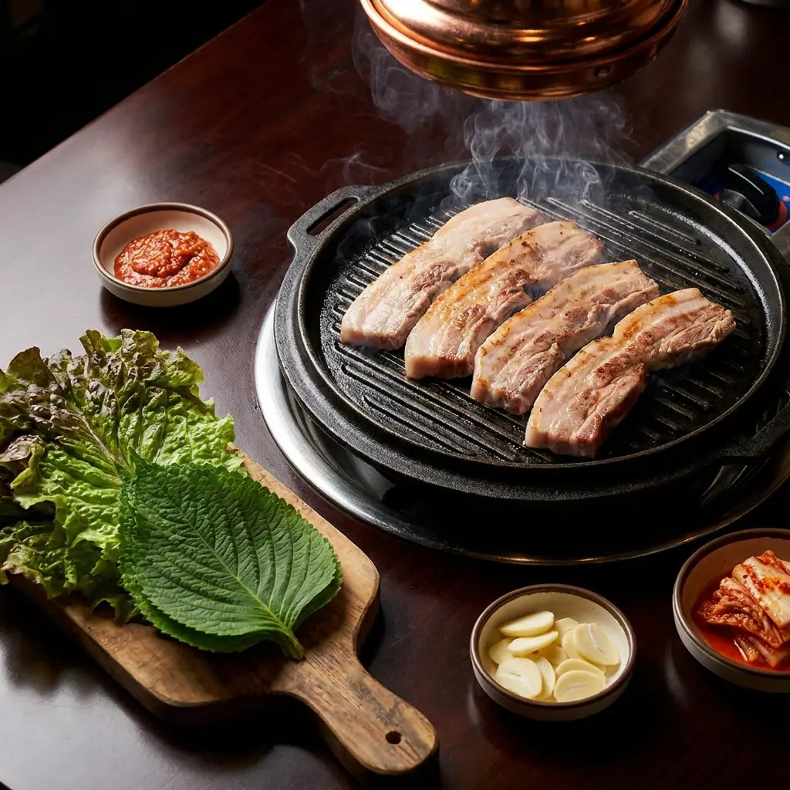
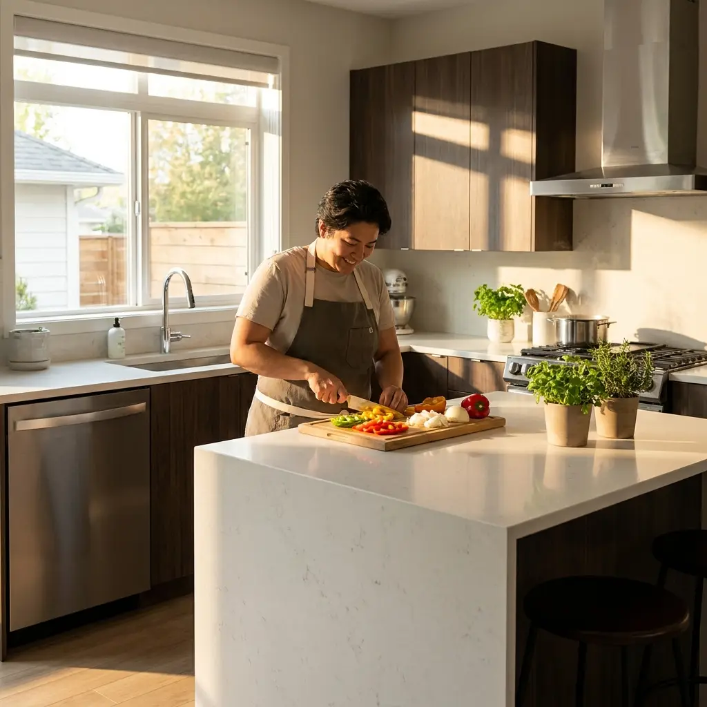

시
Gratuit · Chronométré · Style TOPIK
Examen blanc
façon TOPIK
Un test chronométré en 3 parties — vocabulaire & grammaire, écoute, lecture — pour t'entraîner dans les conditions du vrai examen. Estimation de ton niveau (1 à 6) à la fin.


어휘/문법 · 12 min
듣기 · 12 min
읽기 · 16 min
À noter : ceci est un entraînement gratuit inspiré du format TOPIK, pas un examen officiel — le niveau donné en fin de test est une estimation indicative, pas un score TOPIK réel.
56 questions tirées au sort à chaque tentative · ~40 min au total · aucune inscription requise
Partie suivante
Estimation
Résultat
0%
Score
Estimation indicative basée sur ce mini-examen d'entraînement — pas un score TOPIK officiel. Le vrai TOPIK évalue aussi l'expression écrite (TOPIK II) et dure bien plus longtemps.